Pohled do zákulisí
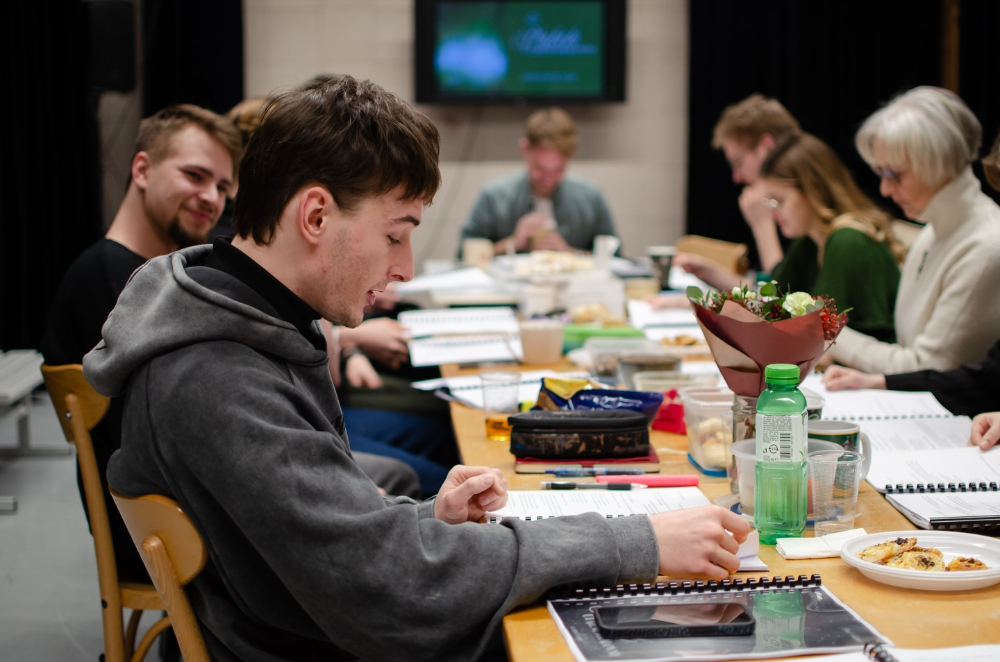
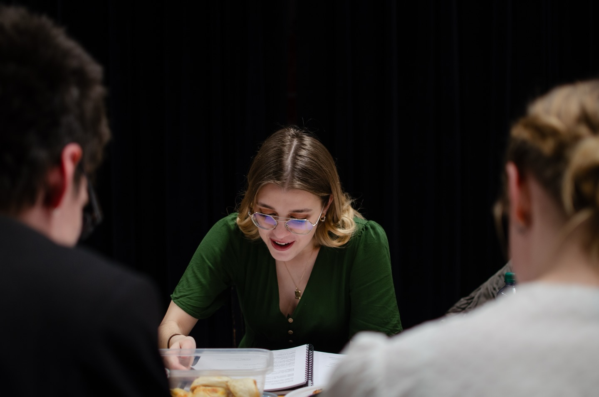

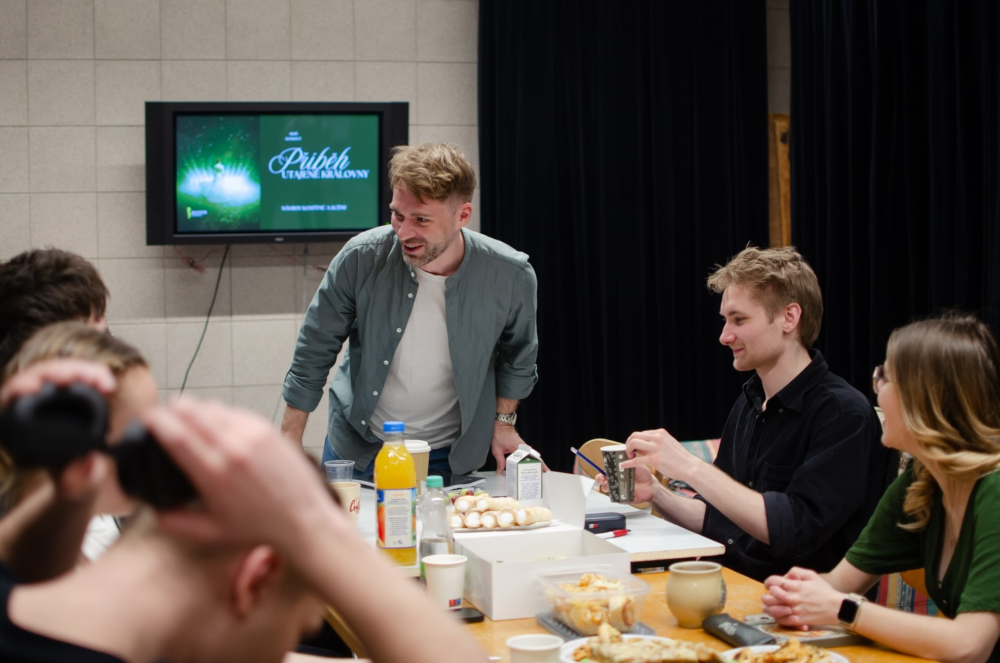


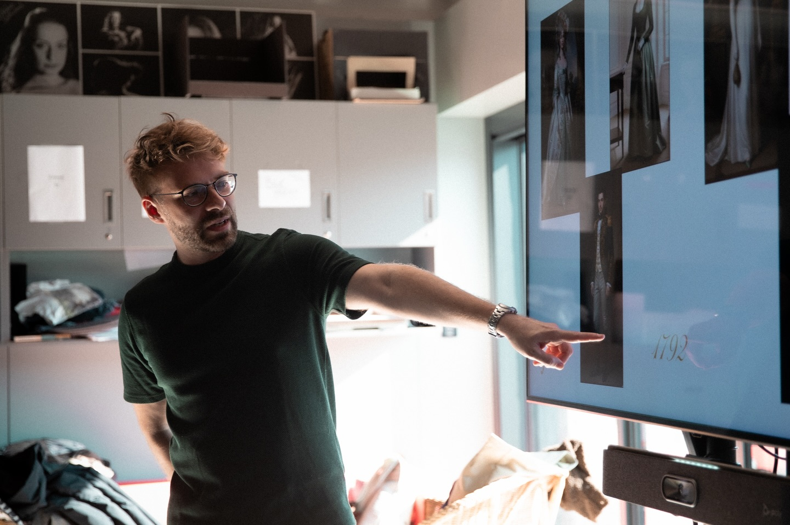
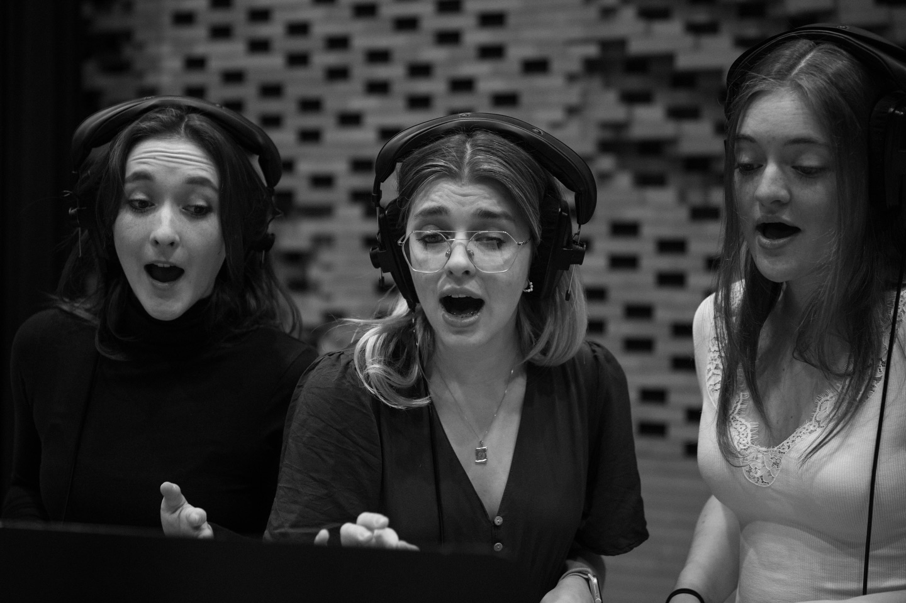

Celozpívaný muzikál · dvě dějství
Příběh, který léta spal, znovu ožívá.
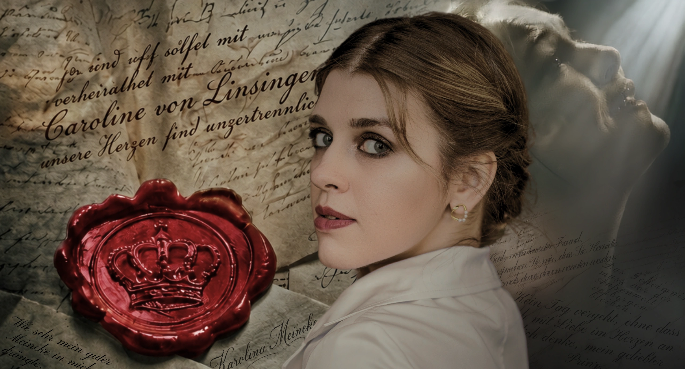
Hannover. Londýn. Blansko. Tři místa, jeden osud a tajemství, které britská koruna pohřbila na dvě staletí.
Muzikál Příběh utajené královny je inspirován osudem Karoliny Meineke, rozené von Linsingen. Traduje se, že uzavřela tajný sňatek s britským princem, pozdějším králem Vilémem IV. Její příběh se po dvě století pohyboval na pomezí historie a legendy a postupně téměř upadl v zapomnění.
Poslední léta svého života prožila Karolina v jihomoravském Blansku, kde také zemřela. Právě toto nečekané spojení britského královského dvora s moravským městem se stalo jedním z hlavních impulsů ke vzniku muzikálu. Inscenace propojuje intimní lidský příběh s evropskými dějinami a připomíná osobnost, jejíž osud je s tímto regionem dodnes spojen.
Vedle neobvyklého námětu je výjimečná také forma díla. Příběh utajené královny je původní autorský muzikál, který je vyprávěn téměř výhradně hudbou a zpěvem. Svou koncepcí se vědomě přibližuje opeře a vytváří osobitý hudebně-dramatický tvar na pomezí obou žánrů.
Aleš Kohout, herec, skladatel, režisér a pedagog, získal své první divadelní zkušenosti (herecké i autorské) v Uměleckém centru dětí a mládeže Květy Kimové. Po studiích muzikálového herectví v ateliéru docentky Sylvy Talpové na JAMU v Brně nastoupil jako sólista muzikálové scény Divadla J. K. Tyla v Plzni, kde během devíti sezón ztvárnil řadu výrazných rolí. Patří mezi ně například Molina v Polibku pavoučí ženy, Moritz Stiefel v Probuzení jara, Ren McCormack ve Footloose či Jerry alias Daphné v Někdo to rád horké.
V současnosti se naplno věnuje autorské a pedagogické činnosti. Společně se Sylvou Talpovou vede již třetí ateliér muzikálového herectví JAMU, od roku 2025 z pozice vedoucího. Pro studenty napsal několik autorských děl, Anna Kareninová, Frankenstein – skutečný příběh či Metronom, která si u brněnského publika získala oblibu.
Muzikál Příběh utajené královny představuje jeho první autorské zpracování regionálního tématu. Současně pokračuje v rozvíjení formy tzv. muzikálové opery, v níž se propojuje muzikálová a operní estetika.
Muzikál vznikl v Ateliéru muzikálového herectví Sylvy Talpové a Aleše Kohouta.





Kostýmní listy jednotlivých postav a návrh scény – Aleš Kohout. Kliknutím list zvětšíte.
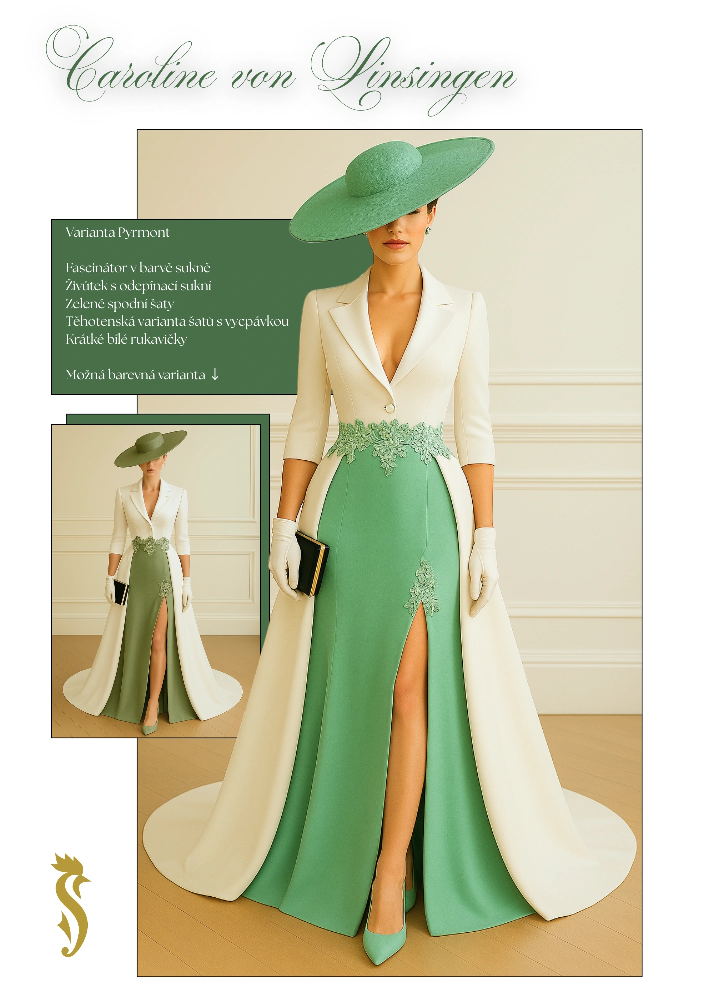
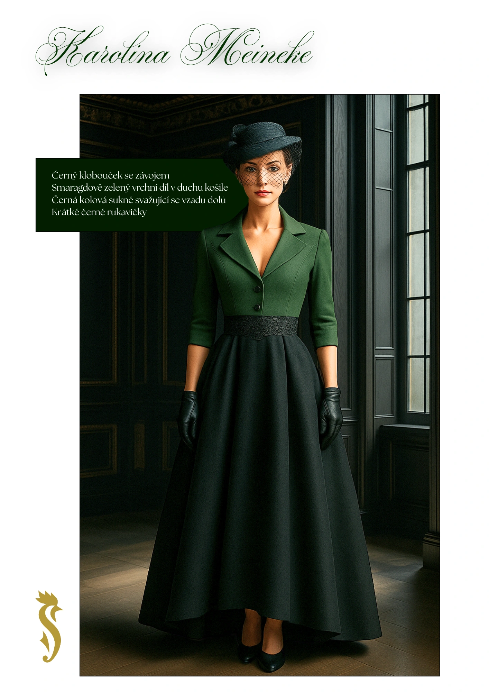
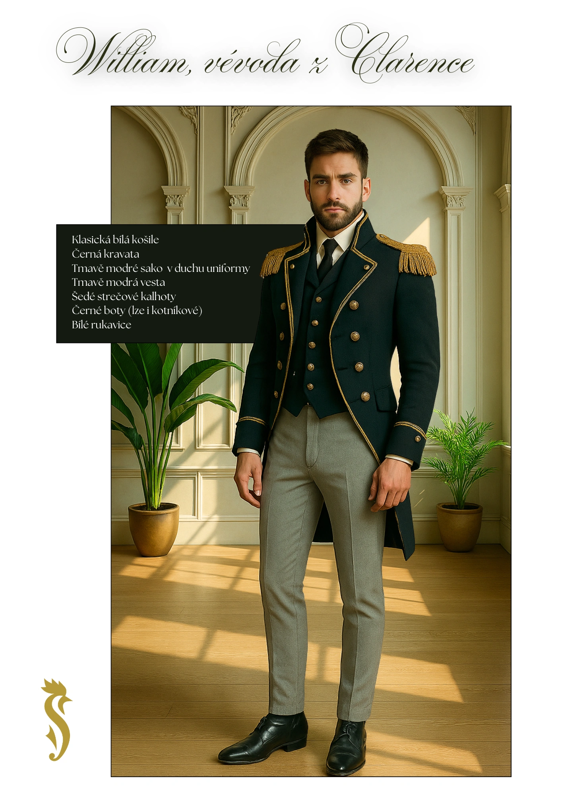
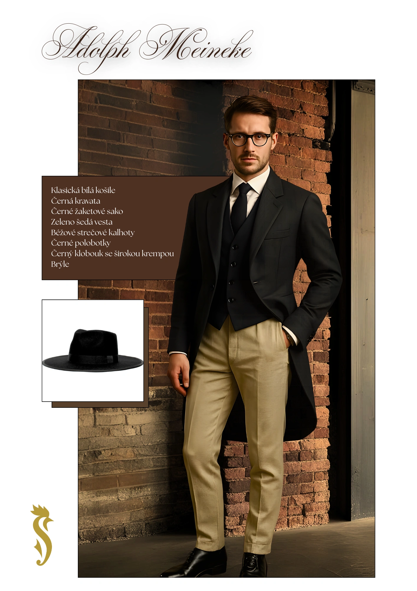
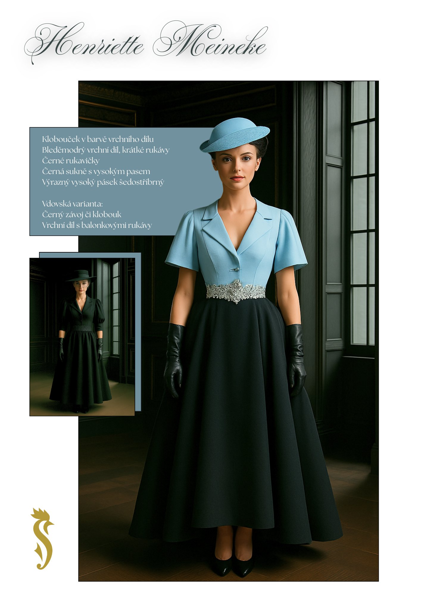
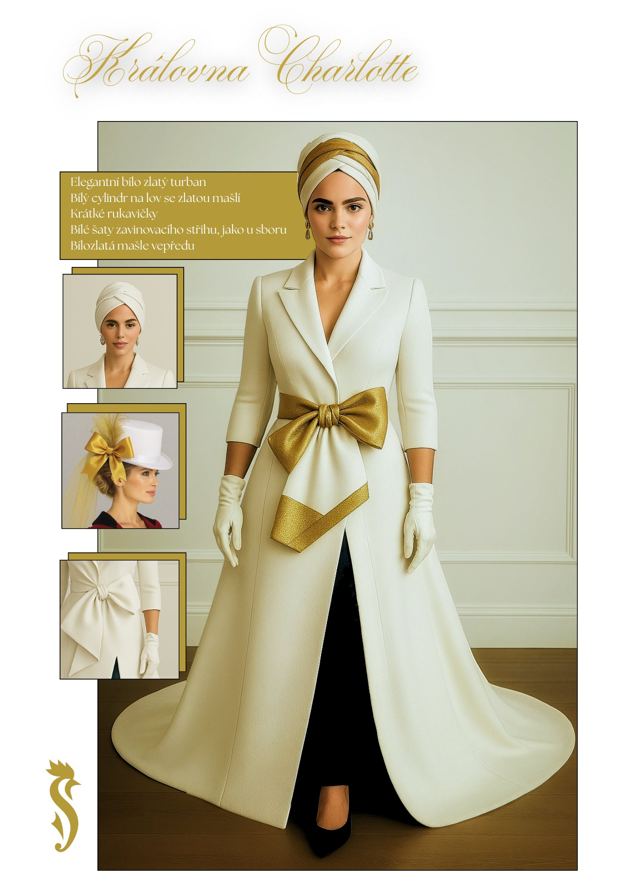
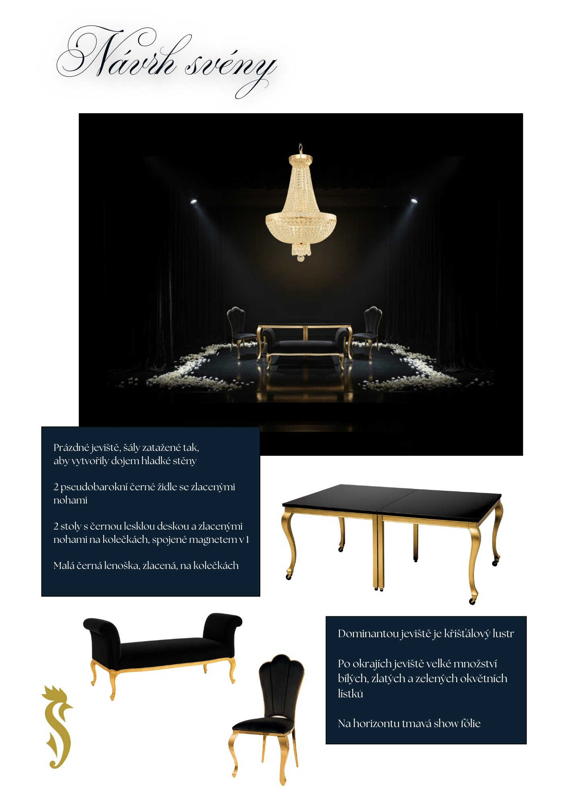